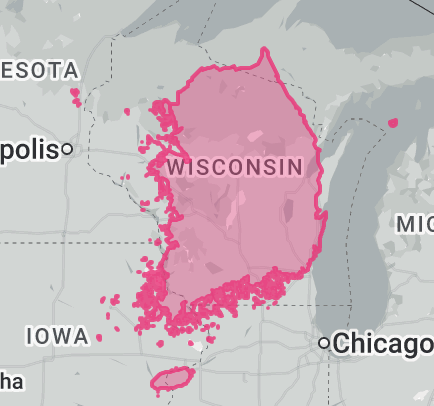
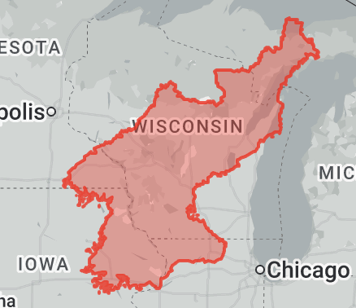
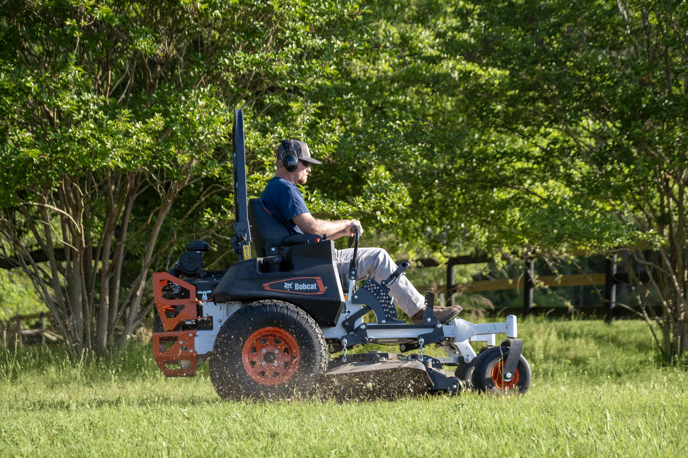
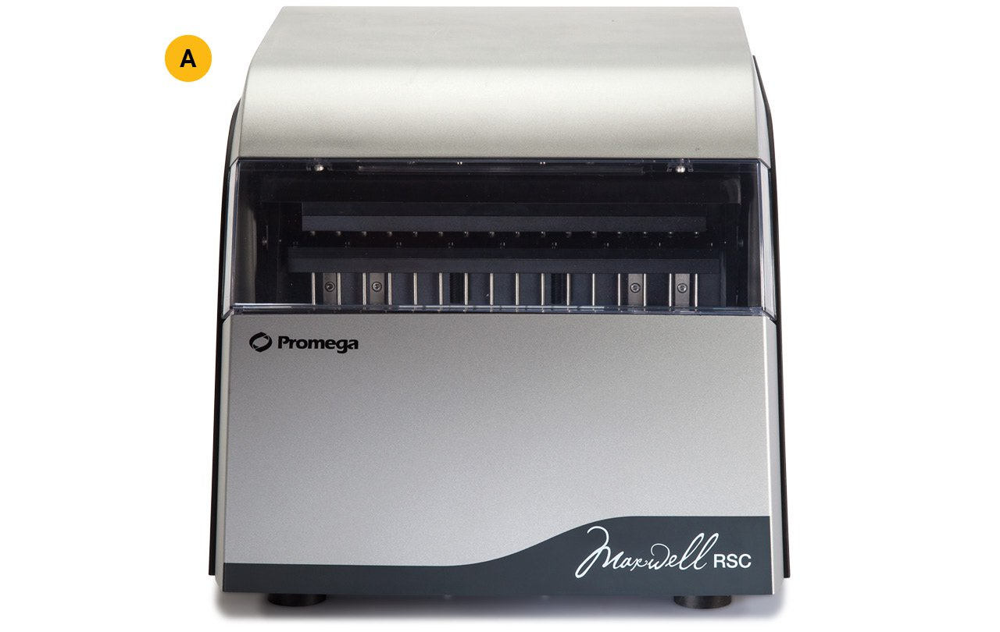
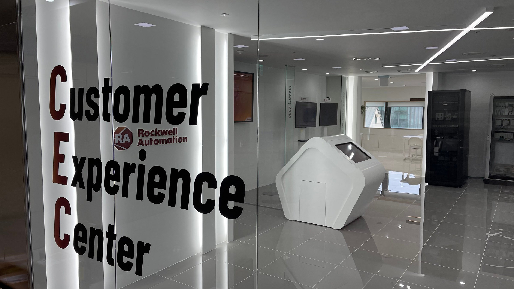

30% more space. 13 times the people.




Area, population and the Wisconsin comparison
The Korean peninsula is roughly 30% larger than Wisconsin, with about thirteen times the population. Start with a place you know.
Existing comparison images from The True Size; together the two countries are a little larger than Wisconsin.
Two countries. One peninsula.
| Place | Area, square miles | Population |
|---|---|---|
| Wisconsin | 65,496 | 6.0 million |
| South Korea | 38,765 | 51.7 million |
| North Korea | 46,540 | 26.6 million |
| Korean peninsula | 85,305 | 78.2 million |
Sources: UN World Statistics Pocketbook 2025, Census Wisconsin population estimate, and Census total-area figures. Population is rounded; Wisconsin's area includes water. These figures establish scale rather than a precise land-area density comparison.
Madison is near 43° north; Pyongyang is near 39° north. Both have distinct seasons, although their weather systems and landscapes differ.
Wisconsin and Korea: water, seasons, and shared meals
Water and four seasons
Wisconsin's lakes, fishing, ice shanties, and cabins make water and weather part of its calendar. Korea's mountains, watersheds, and coastlines also shape food, holidays, and everyday life. The similarity is a useful starting point; their histories and environments remain distinct.
Gemütlichkeit and jeong (정)
Gemütlichkeit is a German-heritage word for warm, comfortable sociability. A supper club, fish boil, or Packers tailgate offers a Wisconsin example. The tavern is also a social institution.
Jeong is a Korean word for emotional bonds developed through shared time. Family meals and evenings with coworkers provide examples. Soju and the toast 건배—literally, “dry the glass”—belong to that social world. These words are a comparison, not exact translations of each other.
Why the earlier GDP chart needs care
The original preparation compared Wisconsin's economy with estimates for both Koreas. Those numbers did not share a clearly established year or measurement basis. A state's output, a country's nominal GDP, and an estimate for North Korea cannot be combined into a reliable ranking without that information.
The area and population comparison remains useful. Economic capacity receives a separate treatment in South Korea and North Korea.
Wisconsin already trades with Korea.
- $724M
- Wisconsin → South Korea
- $472M
- South Korea → Wisconsin
$1.195 billion in reported goods flows · 2025
Exact figures, trade mix and Census definitions
In 2025, Wisconsin recorded $723,657,401 in goods exports to South Korea and $471,804,303 in goods imports from South Korea: $1,195,461,704 in combined reported goods flows. South Korea was Wisconsin’s ninth-largest export destination and sixteenth-largest import source.
| Goods flow | 2024 | 2025 | Change |
|---|---|---|---|
| Wisconsin → South Korea | $700,133,595 | $723,657,401 | +3.36% |
| South Korea → Wisconsin | $435,159,980 | $471,804,303 | +8.42% |
WEDC’s 2025 full-year trade report, export table p. 4 and import table p. 10; report published under March 2026, checked October 4, 2026. WEDC uses U.S. Census data through WISERTrade. The large display values are rounded.
The figures cover goods, not services. Exports use origin of movement: the state where the export journey begins. Imports use state of destination, as recorded when customs entry documents are filed. These measures do not establish where all goods were produced or ultimately consumed. Census discourages calculating a state trade balance from them. Census definitions and limitations.
South Korea’s 2025 export mix from Wisconsin includes medical/scientific instruments (32%), industrial machinery (11%), miscellaneous food products (6%), electrical machinery (6%), meat (6%), dairy (5%), organic chemicals (5%) and other products (29%): rounded shares in WEDC’s South Korea chart. Medical/scientific exports to South Korea increased 40.6% in 2025, according to the full-year report.
Kimberly-Clark × Yuhan-Kimberly

A joint venture formed in 1970 connects a familiar Wisconsin company with Korea.
The joint venture and image source
Yuhan-Kimberly’s joint venture with Kimberly-Clark began in 1970. Yuhan-Kimberly’s company history.
The photograph shows a US Huggies product and is used here to identify the Kimberly-Clark brand; it is not a photograph of Korean product packaging. Kimberly-Clark’s September 3, 2026 Huggies release.
Bobcat: built in Wisconsin.

South Korean ownership. Wisconsin manufacturing.
Johnson Creek, ownership and photo source
Bobcat’s June 15, 2023 Johnson Creek facility announcement describes Wisconsin production and its place within the South Korean Doosan group. Doosan Bobcat’s current location directory lists its Korean headquarters and Johnson Creek manufacturing operation.
The photograph comes from Bobcat’s mower catalogue. Its capture date and location are not identified; the image does not establish that this pictured mower or mowing scene is in Wisconsin.
Promega + Rockwell Automation




Future opportunities: medical instruments and factory automation.
Wisconsin–Korea company connections and image sources
Promega’s company directory identifies its Madison headquarters and Seoul operation, which manufactures Maxwell instruments. The Maxwell RSC instrument page supplies the product photograph; it does not identify the manufacturing location of the pictured unit.
Rockwell’s August 13, 2026 Korea announcement identifies its Milwaukee headquarters and Korean operations. The photograph shows its Seoul Customer Experience Center.
WEDC reports that medical/scientific instruments were 32% of Wisconsin’s goods exports to South Korea in 2025, with 40.6% growth. That provides a concrete market base for further opportunities. WEDC’s South Korea profile. The U.S. Commercial Service’s manufacturing guide describes Korean demand for factory automation. These are potential markets, not new orders secured by the pictured companies.